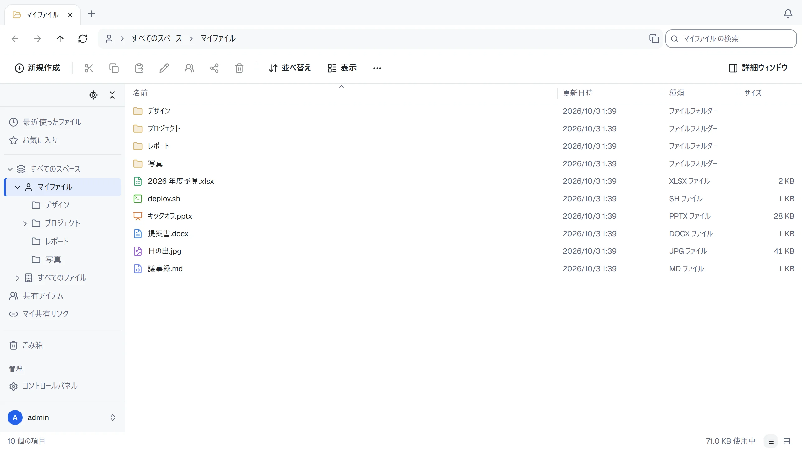
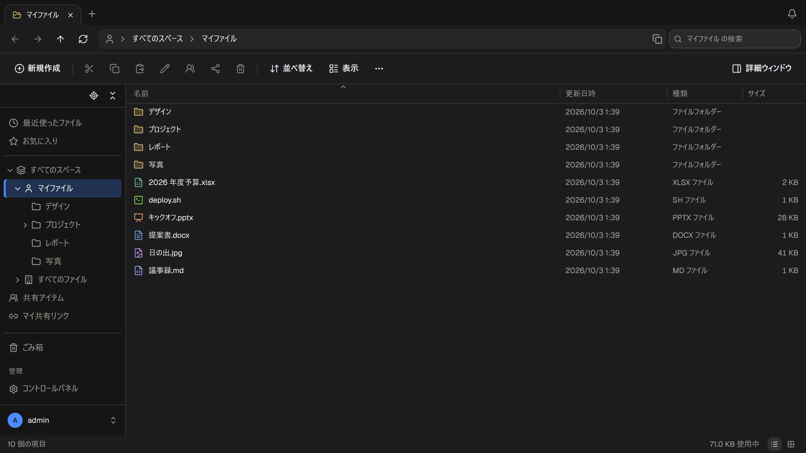

ファイルは自分たちのサーバーに。使い方はエクスプローラーのまま。
ThirtyFile は、チームのためのファイルマネージャーです。ブラウザーで動き、見た目も操作もおなじみのエクスプローラーと同じです。ファイルは自分たちで管理するストレージに保存されます。


共有ドライブに必要なものが、すべてそろっています
研修は要りません。エクスプローラーが使えれば、ThirtyFile も使えます。
最初のクリックからなじめる
タブ、アドレスバー、フォルダーツリー、ドラッグアンドドロップ、右クリックメニュー、いつものキーボードショートカットがそろっています。パソコンやスマートフォンで、ネットワークドライブとして割り当てることもできます。
Office ファイルをブラウザーで開く
何もインストールせずに、Word、PowerPoint、Excel をプレビューできます。Excel ブックとテキストファイルはオンラインで編集でき、以前のバージョンも残ります。
リンクで共有
パスワード、有効期限、ダウンロード回数の上限を付けたリンクを送れます。フォルダーを同僚と共有したり、ファイルを送ってもらったりすることもできます。
保存先を選べる
ローカルディスクや NAS（ファイルは普通のフォルダーのまま）、S3 互換ストレージ、SFTP、FTP に保存できます。NAS の共有フォルダーなど、既存のフォルダーをそのままスペースにすることもできます。
チームごとのスペース
個人用、全社用、チーム用のスペースがあり、閲覧者・編集者・管理者のロールと、スペースごとの容量の上限を設定できます。
サインイン方法を選べる
パスワードと 2 段階認証のほか、Microsoft、Google、GitHub、任意の OpenID Connect プロバイダーのアカウントでサインインできます。サインインとファイル操作はすべて記録されます。
ブラウザーのままスプレッドシートを編集
Excel ブックを開き、必要なところを変えて保存するだけです。ファイルは普通の Excel ファイルのままなので、どこでも開けます。
- 数式、表示形式、色、罫線
- Excel との間でコピーと貼り付け
- グラフや画像など、ファイル内のほかの要素はそのまま残ります

共有する範囲を思いどおりに
リンクには、パスワードを求めたり、1 週間で無効にしたり、ダウンロード回数を制限したりできます。
- リンクを作った人がアクセス権を失うと、リンクも無効になります
- 誰がいつリンクを開いたか確認できます
- 受け取る人にアカウントは要りません

昼も夜も、パソコンでもスマートフォンでも快適
ライトモードとダークモード、スマートフォン向けのレイアウトがあり、表示言語は一人ひとりが英語か繁体字中国語を選べます。
- 写真はサムネイルで表示し、動画、音声、PDF はビューアーで開けます
- 接続が切れても、アップロードは中断したところから再開します
- すべてのページに自分たちの名前、ロゴ、色を設定できます

1 分で使い始められます
小さなプログラムが 1 つだけです。データベースや Web サーバーを用意する必要はありません。
- Docker をインストールファイルを保存するパソコンかサーバーに入れます。
- コマンドを実行パスワードは自分で決めたものに変えます。
- ページを開く
http://localhost:8080を開き、adminでサインインします。
docker run -d --name thirtyfile --restart unless-stopped \
-p 8080:8080 \
-v /srv/thirtyfile/data:/data \
-v /srv/thirtyfile/storage:/storage \
-e THIRTYFILE_ADMIN_PASSWORD='choose-a-password' \
ghcr.io/thirtyfile/thirtyfile:latestcurl -fLO https://github.com/ThirtyFile/ThirtyFile/releases/latest/download/compose.yaml
docker compose up -d次はユーザー、保存場所、ロゴを設定しましょう。
チームに、自分たちのドライブを
1 分でインストールして、試してみてください。ソースコードは GitHub で公開しています。
インストールと初期設定のガイドは日本語で読めます。その他の詳しいガイドは、現在英語のみです。